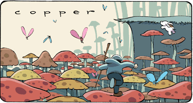

Incomplete history
$\operatorname{ex}(n, F)$ – largest # of edges in an $F$-free graph
Erdős–Stone–Simonovits Theorem
$$\operatorname{ex}(n, F) = \left(1 - \frac{1}{\chi - 1}\right){n \choose 2} + o(n^2)$$
Degenerate case $\chi = 2$
- Complete bipartite $K_{s,t}$
- Cycle of even length $C_{2k}$
Even cycles


Erdős: $\operatorname{ex}(n, C_{2k}) \le$ $\gamma_k$ $n^{1+1/k}$
| 1974 | Bondy–Simonovits | $20k$ | |
| 2000 | Verstraëte | $8(k-1)$ | |
| 2012 | Pikhurko | $k-1$ | |
| 2014 | Bukh–J. | $80\sqrt{k\log k}$ |
Plan of talk
| ▶ | Revisit Pikhurko's proof |
| How to make more math? |
images from boltcity.com
Combinatorial gadget
| If | $V(\Theta) = $ $A$ $\cup$ $B$ is not bipartition |
| Then | Path from $A$ to $B$ of any possible length |
Pikhurko's proof
Suppose $G$ is $C_{2k}$-free and $e(G) \ge n^{1+1/k}$
Take $H\subset G$ of minimum degree $\delta(H) \ge e(G) / n \ge n^{1/k}$
| Claim | $H_i$ is $\Theta$-free for $i < k$ |
Proof of the claim
Find $y$ the rightmost common ancestor of $\Theta \cap V_i$ in $T$.
Pick $z $ a child of $y$, and find $C_{2k}$ using $\Theta$.
Pikhurko's proof (cont.)
| Obs | Bipartite graph of min deg $\ge k$ contains $\Theta$-graph. |
| Cor | Average degree of $H_i \le 2k$. |
Punchline
$\lesssim 2k$
$V_{i}$
$\lesssim 2k$
$\gtrsim \delta$
$V_{i+1}$
$\frac{v_{i+1}}{v_i}\lesssim \frac{\delta}{k}$$\implies \left(\frac{\delta}{k}\right)^k \lesssim n$$\implies e(G) \lesssim k\ n^{1+1/k}$
Plan of talk
| ▶ | Review Pikhurko's proof |
| ▶ | How to make more math? |
Trilayered graph
- Build breath-first search tree
- Find degree conditions for $\Theta$-free trilayered graph
- Find $C_{2k}$ if trilayered graph contains $\Theta$-graph
Well-placed $\Theta$-graph
Minimum degree condition
Dichotomy
| Large minimum degree | |
| Implies | Denser trilayered subgraph |
| Or | $\Theta$-graph on two levels |
Maximum degree condition
| Question | Is $Bg$ big? |
| Yes | $V_{i+1} = Bg \cup Sm$ |
| No | $V_{i+1} = Sm$ |